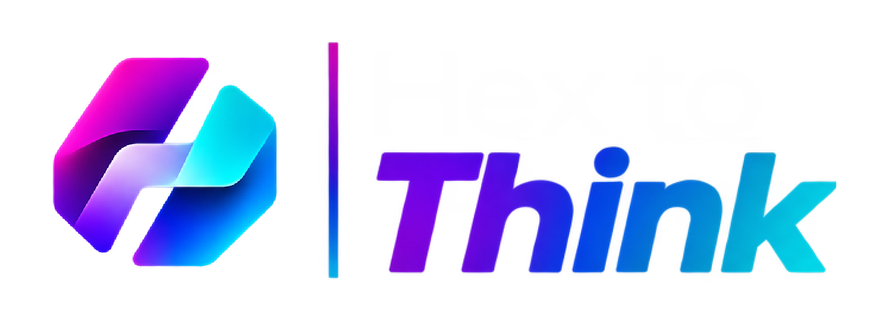
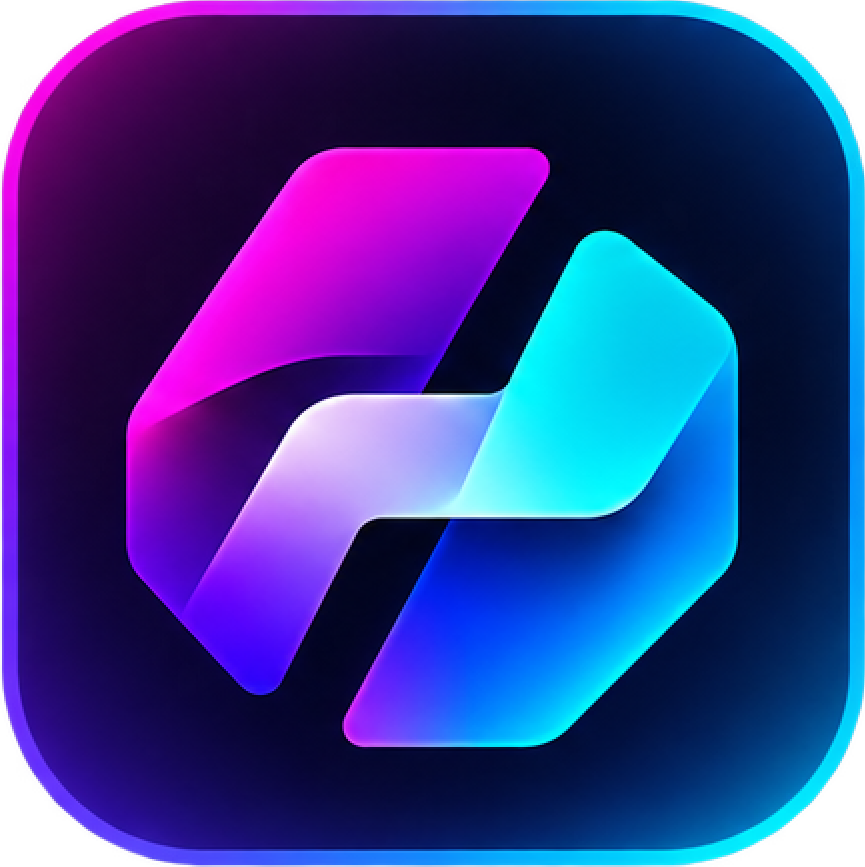

Uma biblioteca sua.
Salve a paleta escolhida, edite as cores e arraste para reorganizar. Abra cada projeto na própria biblioteca.

Baixar para WindowsA cor que você imaginou, mais perto do seu próximo projeto. Converta, compare e organize suas paletas em um só lugar.

HEX → PANTONEComece por uma cor ou por uma imagem. Compare a entrada com a aproximação Pantone e copie o código com um clique.
Carregando referências locais…
Demo sRGB com distância CIEDE2000. O aplicativo usa Little CMS e os perfis ICC selecionados; os resultados podem variar. Catálogo parcial de aproximações de terceiros, sem valores oficiais Pantone.
Os dados da demo são carregados pelo site; o aplicativo instalado mantém a base local e converte sem internet. Confira cores de produção em um guia físico e em provas de impressão.
Ferramentas técnicas com espaço para criar. Tudo organizado em áreas próprias, sem perder sua paleta pelo caminho.
Salve a paleta escolhida, edite as cores e arraste para reorganizar. Abra cada projeto na própria biblioteca.
Selecione os perfis RGB e CMYK, importe arquivos ICC e compare a saída. A disponibilidade depende dos perfis no computador.
Exporte cartões com amostras e códigos. Vetores e textos editáveis, com HEX e Pantone na mesma paleta.
Troque a combinação e observe as relações entre fundo, texto e destaque.
Estudos visuais ilustrativos. No aplicativo, o criador e o gerador incluem prévias de contraste e aplicações da identidade.
O gerador transforma seu briefing em propostas de paletas, com nenhuma, uma ou duas cores de partida. Explora relações de harmonia, bases claras e escuras e cores de destaque.
As sugestões usam regras locais de design e as amostras disponíveis na base Pantone. Não há IA remota. Revise as escolhas antes de adotar uma identidade.
Explore o gerador no app ↗Instale, conheça as ferramentas no tutorial e crie no seu ritmo.
Sem conta. Conversão e biblioteca no seu computador.
Execute o instalador e escolha onde instalar. Não é necessário administrador. No primeiro acesso, você poderá conhecer o aplicativo pelo tutorial ou explorar por conta própria.
O tutorial pode ser revisto nas configurações. Novas versões ficam na área Atualizações, com download e instalação sob seu comando.
O instalador ainda não tem certificado Authenticode comercial; o Windows pode mostrar um aviso de editor desconhecido. O atualizador do app verifica SHA-256 e a assinatura própria do projeto.
SHA-256 do instalador
Consulte SHA256SUMS.txt na página da versão.Sim. Depois de instalar, conversão, biblioteca, gerador e exportação funcionam localmente. Somente o site, a consulta e o download de novas versões precisam de conexão.
Não. A base é parcial e reúne aproximações sRGB de terceiros. Monitor, papel, tinta e iluminação mudam a percepção da cor. Para produção, confira a referência em um guia físico e faça provas de impressão.
As amostras e seus códigos, em vetores e textos editáveis. O EPS atual não incorpora perfil ICC nem define tintas spot oficiais Pantone. Confira as especificações antes da impressão.
A demo processa a imagem no navegador. O aplicativo processa imagens e paletas no próprio computador, sem envio para serviços de conversão. O site é hospedado no GitHub Pages e usa os recursos da própria página.
É uma ferramenta gratuita, independente, criada para auxiliar designers. Não é um produto oficial nem endossado pela Pantone. PANTONE é marca de seus respectivos titulares.